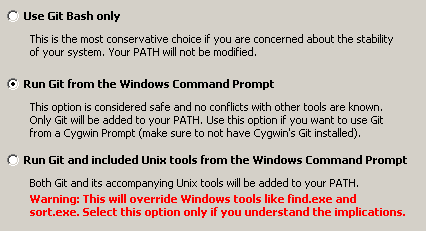
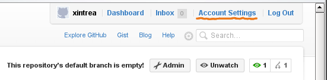
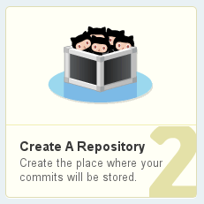

Система контроля версий GIT
|
Здесь описывается практическая часть вопроса использования Git - его установка и регистрация на сервере GitHub.com.
GitHub.com - это сервис, предлагающий хранение вашего кода и данных с использованием системы контроля версий Git. GitHub предоставляет бесплатный тарифный план для хранения 300Мб данных в открытом виде. Это значит, что любой пользователь интернета может скачать себе ваши данные. На GitHub можно разместить и закрытые для других репозитарии, заплатив 7$ в месяц. На бесплатном аккаунте GitHub, по-умолчанию, никто не сможет изменить ваши данные (могут только читать). Но вы можете настоить, кто из пользователей системы GitHub, имеет право на запись.
В статье подробно рассказывается, как делать настройку Git в ОС Windows и в ОС Linux.
Установка Git под Linux
Пользователям Linux, думаю, нет смысла объяснять, как устанавливать Git - в каждой системе это делается по-разному. В системе Debian (которая стоит у меня), для установки Git, можно использовать команду:
apt-get install git
Установка Git под Windows
Идем на официальную страницу Git http://git-scm.com, кликаем на Download for Windows. В открывшемся окне кликаем на Full installer for official Git. Запускаем полученный exe-шник.
В процессе инсталляции будет задан такой вопрос:

Я рекомендую выбрать "Run Git from the Windows Command Prompt". Все остальные опции можно оставлять по-умолчанию. После установки Git нужно перегрузиться или завершить сеанс пользователя и снова войти, чтобы применились изменения в системной переменной PATH.
Далее нужно проверить, доступен ли Git для работы. В любом каталоге даем команду:
git --version
Если получаем информацию о версии, то Git установлен и работает. Если получаем информацию что программа git не найдена, разбираемся что сделали не так.
Настройка SSH-ключей
Перед тем, как регистрироваться на GitHub, следует вначале сгенерировать SSH-ключ шифрования. Этот ключ необходим, чтобы быстро устанавливать соединение с GitHub, не вводя пароля. Без такого ключа GitHub просто не будет работать.
Внимание!
В момент генерации ключа будет запрошен пароль. Это пароль доступа к закрытому ключу, который хранится только на вашей машине и нигде больше. Этот пароль задается для максимальной секьюрности, хотя можно обойтись и без него. Нужно знать, что задав пароль к закрытому ключу, нужно будет при каждом соединении с сервером GitHub вводить данный пароль. Таким образом, при задании пароля, всё удобство пользования ключами шифрования пропадает.
Пользователям MyTetra: интерфейс работы с командной строкой, который используется для вызова git при синхронизации, не может работать на ввод символов. Поэтому, если вы зададите пароль, синхронизация работать не будет.
Настройка SSH-ключей в Linux
В операционной системе Linux вначале нужно заглянуть в каталог ~/.ssh. Если там есть файлы id_rsa и id_rsa.pub то это и есть SSH-ключи. Если такого каталога или таких файлов нет, то ключи нужно сгенерировать. Даем команду:
ssh-keygen -t rsa -C 'myemail@mail.ru'
Вместо myemail@mail.ru нужно указать свой email. В процессе генерации ключа у вас спросят куда положить файлы, в ответ просто нажимаем Enter. При запросе пароля просто нажимаем Enter. После генерации, в каталоге ~/.ssh должны появиться файлы id_rsa и id_rsa.pub, они нам пригодятся в дальнейшем.
Настройка SSH-ключей в Windows
В операционной системе Windows генератор SSH-ключей включен в комплект поставки Git. Для генерации ключей необходимо запустить на выполнение файл C:\Program Files\Git\Git bash.vbs. Его можно запустить как обычный exe-шник. Откроется программа "Консоль git". В ней надо дать команду:
ssh-keygen -t rsa -C "myemail@mail.ru"
Будьте внимательны, в этой консоли подглючивает копи-паст, прощще ввести команду вручную. В качестве email указываем свой почтовый ящик. На запрос "Enter file in which to save the key" просто нажимаем Enter. При запросе пароля "Enter passphrase" и "Enter same passphrase again" просто нажимаем Enter. В процессе генерации ключей в консоли будет выдаваться примерно следующая информация:
Generating public/private rsa key pair.
После выполнения этой программы, в каталоге C:\Documents and Settings\username\.ssh будут лежать файлы id_rsa и id_rsa.pub, они нам пригодятся в дальнейшем.
Регистрация на GitHub.com
Теперь всё готово для регистрации. Переходим на стартовую страницу GitHub.com. Интерфейс немного замороченный, поэтому приведу пару скриншотов где что нажимать. Дизайн и верстку могут в любой момент сменить, так что описываю логику действий на данный момент.
В верхнем меню находим пункт "Pricing and Signup" и нажимаем на него:
Откроется страница выбора тарифного плана. Выбираем бесплатный аккаунт "Create a free account":
Далее появится страница регистрации, на которой надо ввести имя пользователя, свой настоящий email и задать пароль. После регистрации сразу попадаем на личную страничку.
Установка SSH-ключа в GitHub
Сразу после регистрации необходимо прописать в системе GutHub свой публичный ключ шифрования (открытый SSH-ключ). Для добавления ключа, надо в правом верхнем углу нажать "Account Settings":

В открывшемся окне нужно кликнуть на пункт меню "SSH Public Keys", и нажать "Add Another Public Key". Появится два поля - название ключа (Title) и содержимое ключа (Key).
В поле Key надо вставить содержимое файла id_rsa.pub. Помните, в каком каталоге они находятся? Переходим в этот каталог, открываем любым текстовым редактором файл id_rsa.pub (именно с расширением .pub, не перепутайте). Выделяем весь текст, копируем, и вставляем на странице GitHub в поле Key.
После добавления ключа, компьютер может соединяться с GitHub через программу git, и никаких ошибок не должно возникать.
Создание репозитария на GitHub
Теперь пришло время создать свой первый репозитарий на GitHub. Репозитарий можно рассматривать просто как директорию, в которой будут лежать синхронизируемые файлы и поддиректории. Создавать репозитарий нужно в web-интерфейсе GitHub, а наполнять его файлами и работать с ним можно будет уже с помощью программы git на своем компьютере.
Для создания репозитария, нужно в правом верхнем углу нажать "Dashboard". В открывшемся окне вы увидите пункт "Create A Repository":

Так вот, этот пункт нам не нужен! Данный пункт открывает не диалог создания репозитария, а страничку помощи. Вместо клика по этому пункту, ищем ниже на странице малоприметную ссылку "Create A Repository". Она и откроет диалог добавления нового репозитария.
В диалоге добавления нового репозитарию нужно заполнить, как минимум, поле названия проекта "Project Name". В названии проекта лучше не использовать кириллицу, так как имя проекта - это по факту имя директории. Для избежания проблем лучше, чтобы имя проекта содержало только латиницу. После нажатия кнопки "Create Repository", репозитарий будет создан.
Рабочая ссылка на репозитарий в системе GitHub формируется так. Если вы зарегистрировались под именем username, и ваш репозитарий называется reponame, то для доступа к этому репозитарию можно использовать следующие ссылки:
В синтаксисе Git:
git@github.com:username/reponame.git
https://username@github.com/username/reponame.git
Работа с репозитарием на GitHub через программу Git
Начиная с этого момента, пляски вокруг web-интерфейса GitHub можно считать законченными. Далее можно работать только используя программу git.
Вначале нужно сделать небольшую настройку программы git: указать локальной системе git имя пользователя и email. Это делается следующими командами, которые можно выполнить, находясь в любом каталоге:
git config --global user.name "YourFullName"
где вместо YourFullName нужно написать свое имя, а вместо myemail@mail.ru - свой email. Эти значения используются для логина на GitHub. Поэтому на месте YourFullName нужно указать ваш логин на GitHub-е, а на месте myemail@mail.ru нужно указать email, который вы вводили при генерации ключей шифрования.
После этих настроек, можно заливать свои файлы в репозитарий. Переходим в каталог со своим проектом, и даем команды:
git init git add . git commit -a -m 'first commit' git remote add origin git@github.com:username/reponame.git git push -u origin master
| ||